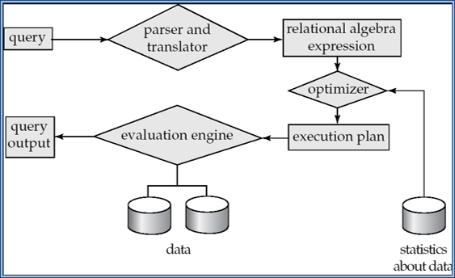
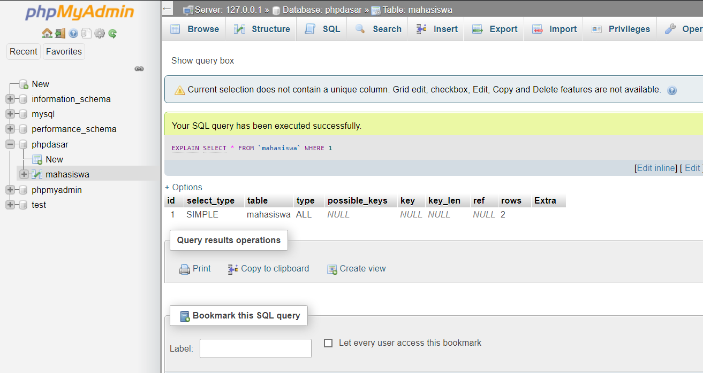

Muh. Dzulfiqar Website
D121181510
D121181510
Proses pengambilan data dari database dalam memenuhi permintaan pemakai.
1. Parsing and translation
Melakukan check syntax&grammar, validasi relasi yang digunakan
mengubah query/SQL ke dlm bentuk yg bisa diolah oleh Query Processing Engine dalam bentuk aljabar relasi, struktur (tree, graph)
2. Optimization
Membuat evaluation plan yang optimal (dengan cost yang rendah)
3. Evaluation
Pemilihan query-evaluation plan terbaik(cost) ,melakukan eksekusi terhadap query tersebut yang menghasilkan jawaban query.


Pengukuran biaya querry :
Biaya evaluasi query dapat diukur dari banyaknya sumber daya sistem yang digunakan, misl: pengaksesan disk,waktu CPU,dan waktu komunikasi
Dalam pemrosesan query file scan merupakan operasi paling dasar dalam pengaksesan data. Penelusuran ini menggunakan algoritma pencarian untuk menemukan dan mengambil record data yang memenuhi kondisi seleksi.
Algoritma dasar :
- A1(Sequential Search)
- A2(Binary Search)
- A3(primary index,key,kesamaan)
- A4(Primary Key,non-key,kesamaan)
- A5(Secondary index, kesamaan)
- A6(Primary Key,perbandingan)
- A7(Secondary index, perbandingan)
Sebuah sistem db mengevaluasi sebuah ekspresi dengan mengevaluasi query bagian perbagian secara berurutan :
1. Materialisasi
yang dimana ekspresi yang diberikan mengevaluasi satu operasi relasional dalam satu waktu. Selain itu, setiap operasi dievaluasi dalam urutan atau urutan yang sesuai. Setelah mengevaluasi semua operasi, keluarannya diwujudkan dalam hubungan sementara untuk penggunaan selanjutnya. Ini membawa metode materialisasi pada kerugian. Kerugiannya adalah bahwa ia perlu membangun hubungan sementara tersebut untuk mewujudkan hasil operasi yang dievaluasi, masing-masing. Hubungan sementara ini ditulis pada disk kecuali ukurannya kecil.
2. Pipeline
Adalah teknik pemecahan atau pembagian suatu pekerjaan atau tugas menjadi beberapa sub-sub tugas, dan mengeksekusi sub-sub tugas tersebut secara paralel dalam unit-unit multihardware atau segmen-segmen. Konsep atau teknik Pipelining pada sistem komputer dapat diimplementasikan pada berbagai tingkatan level.
Ketika multiple expression dibandingkan dengan multiple transformation , maka ada perbedaan pada performa kedua pendekatan tersebut , yakni : ketika multiple expression dimasukkan ke dalam kolom transformasi maka menghasilkan waktu sekitar 02,797 detik. Sedangkan ketika dimasukkan multiple transformation akan menghasilkan sekitar 03,329 detik.
Penyebab utama adanya perbedaan antara kedua pendekatan tersebut karena setiap komponen memiliki tahapan eksekusi sendiri (Validasi, Pre Execute, Execute, Post Execute) yang membutuhkan waktu lebih lama. Tapi kalau dibandingkan antara kedua pendekatan ini ( multiple expression dan multiple transformation ) , multiple expression mempunyai kelebihan dari segi kinerja karena lebih efisien sedangkan multiple transformation mempunyai kelebihan dari segi memberi penanganan kesalahan yang lebih mudah.
Evaluation plan adalah serangkaian operasi-operasi yang dapat digunakan untuk mengevaluasi suatu query. Evaluation plan mendefinisikan dengan tepat algoritma apa yang digunakan untuk masing-masing operasi. 
Untuk menampilkan "Evaluation Plan" di sistem MySQL cukup dengan menambahkan perintah “EXPLAIN” di depan query, tetapi kita harus membuat database dan table terlebih dahulu seperti gambar disamping ini. Command “EXPLAIN” : SELECT * FROM `mahasiswa` WHERE 1
Keterangan :
id
Menampilkan nomor urut SELECT query untuk baris yang di miliki yaitu 1.
select_type
Menunjukkan tipe select yang digunakan.
table
Menampilkan nama tabel di dalam query.
type
Berupa penjelasan, bagaimana tabel itu diakses.
possible_keys
Menjelaskan jika tabel memimiliki indeks.
key
Berupa penjelasan mengenai indeks sebenarnya yang memutuskan untuk digunakan MySQL.
key_len : Menunjukkan panjang kunci yang memutuskan untuk digunakan MySQL, dalam byte.
ref
Berupa kolom yang dibandingkan dengan indeks dan diberi nama dikolom kunci.
rows
Menunjukkan jumlah baris yang menurut MySQL harus diperiksa dari tabel ini, untuk menjalankan query.
Extra Menunjukkan informasi tambahan tentang query processing.